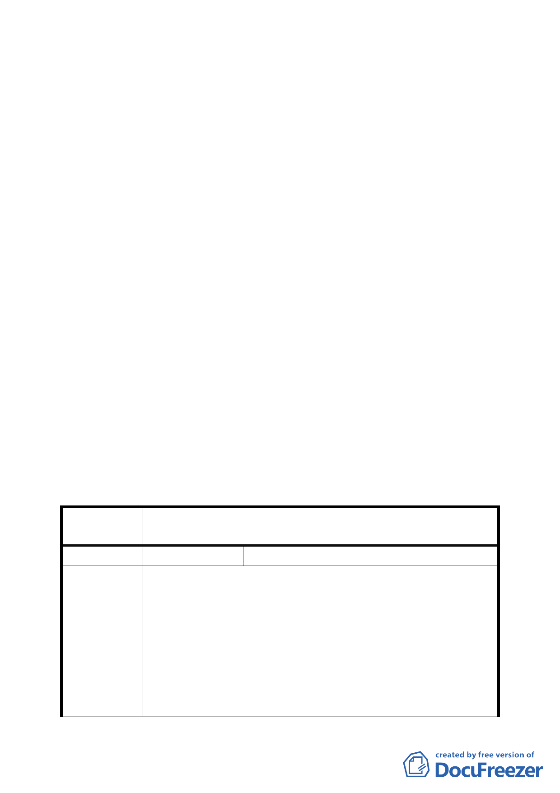

商業區（供商務設施使用）土地使用管制規定計畫案」決議
內容，刪除「以多目標使用方式」等文字。
四、有關「變更臺北市南港經貿園區特定專用區編號 2-1 道路用
地為人行步道用地暨修訂 C6、C7、C8、C9 街廓商業區（供商
務設施使用）土地使用管制規定計畫案」內之「立體連通設
施獎勵」空間之核算，仍應採本案「…供通行通道之垂直投
影面積 3 倍核計…」方式進行認定。
五、C6、C7、C8、C9 街廓之地下層開挖規模依本會 97 年 8 月 19
日審議通過之「變更臺北市南港經貿園區特定專用區編號 2-1
道路用地為人行步道用地暨修訂 C6、C7、C8、C9 街廓商業區
（供商務設施使用）土地使用管制規定計畫案」地下層開挖
規模不超過建蔽率加 10%為原則之規定修正。
六、修正後計畫書附件三「修正對照表」中第 108、117 頁所載修
訂理由為「維持原計畫」之項次，其修訂理由請更正為「序
號調整」及「序號調整及彙整 90 年 9 月 28 日南港通檢案規
定」。
七、公民或團體陳情意見審決如後附綜理表。
臺北市都市計畫委員會公民或團體陳情意見綜理表
案 名 修訂臺北市南港經貿園區特定專用區細部計畫通盤檢討案
編 號 1 陳情人 社團法人台灣都市再生學會
本案針對 R1 街廓地區之土地使用管制要點，如建蔽率及時程
獎勵等項目更加限縮，將使更新事業更加窒礙難行。是以僅
代表 R1 街廓全體居民提出本陳情。
陳情理由
1.時程獎勵疑義:
按本計畫土地使用管制要點第七點中，為鼓勵老舊住宅社
區之開發，依開發時程給予不同之獎勵比例，本陳情範圍
R1街廓權屬複雜，整合困難，若未來提出更新計畫，以本
次通盤檢討明定獎勵期限之規定僅能獲得法定容積2%獎
14